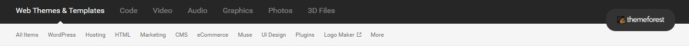
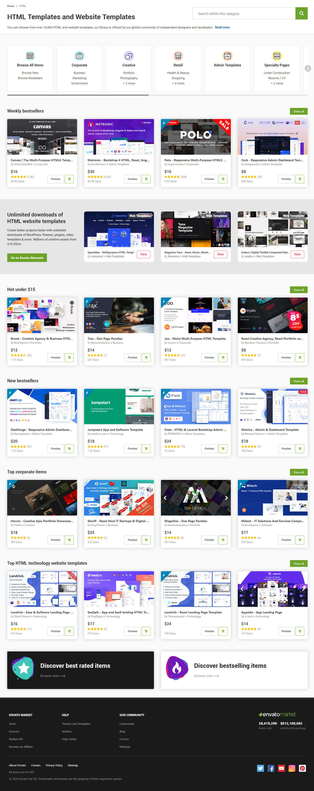

<!DOCTYPE html>
<html lang="zh-Hant">
  <head>
    <meta charset="UTF-8">
    <title>sticky</title>
    <style type="text/css">
      *, body, div {
          margin: 0;
          padding: 0;
      }
      
      body {
          background-color: #000;
      }
      
      .header_top {
          height: 61px;
      }
      
      .navbar {
          height: 99px;
      }
      
      .body {
          height: 3621px;
      }
      
      .wrap {
          margin: auto;
          width: 1438px;
          width: fit-content;
      }
      
      .fixed {
          position: fixed;
          top: 0;
      }
      .readme {
          color: #fff;
      }
      p {display: block;
          margin-bottom: 10px;}
      h1 {text-align: center}
      
    </style>
  </head>
</html>
<body>
  <div class="readme">
    <h1>sticky 效果</h1>
    <p>當滾軸往下滾超過Header_top（最上方那一列）時，將 Navbar 固定在頁面最上方，有寫兼容代碼，相容於Chrome、Firefox、Opera、IE11、edge。</p>
    <hr>
  </div>
  <div class="wrap">
    <div class="header_top" id="header_top"></div>
    <div class="navbar" id="navbar"></div>
    <div class="body" id="body">
      <picture>
        <source srcset="img/body.webp" type="image/webp">
      </picture>
    </div>
  </div>
  <script type="text/javascript" src="sticky_navbar.js"></script>
</body>